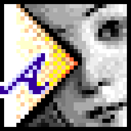
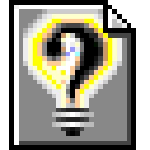
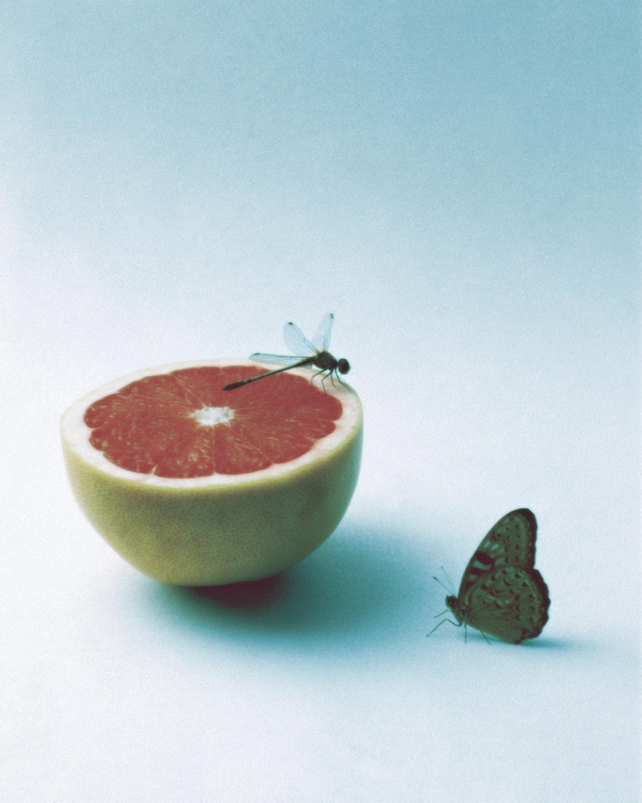
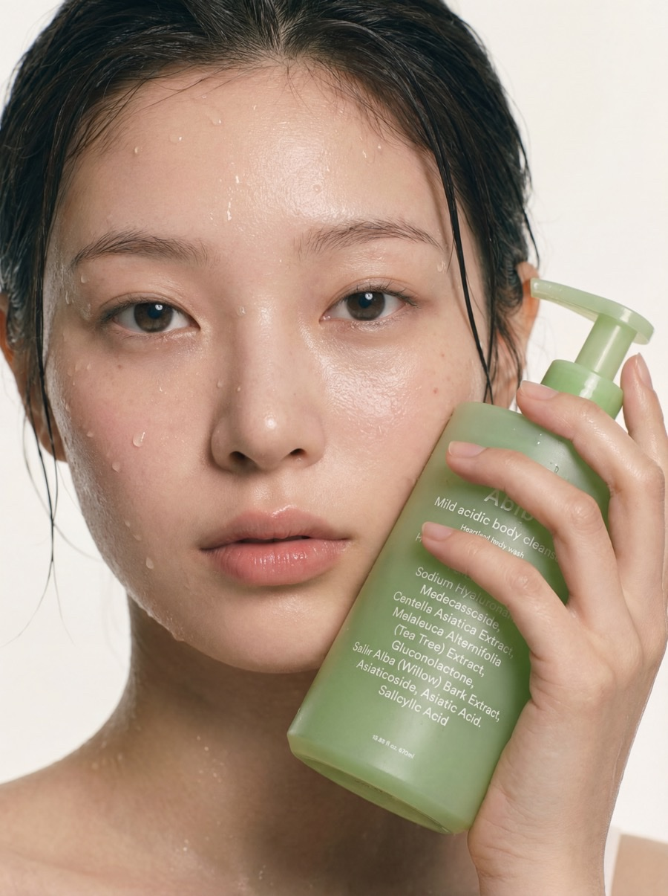
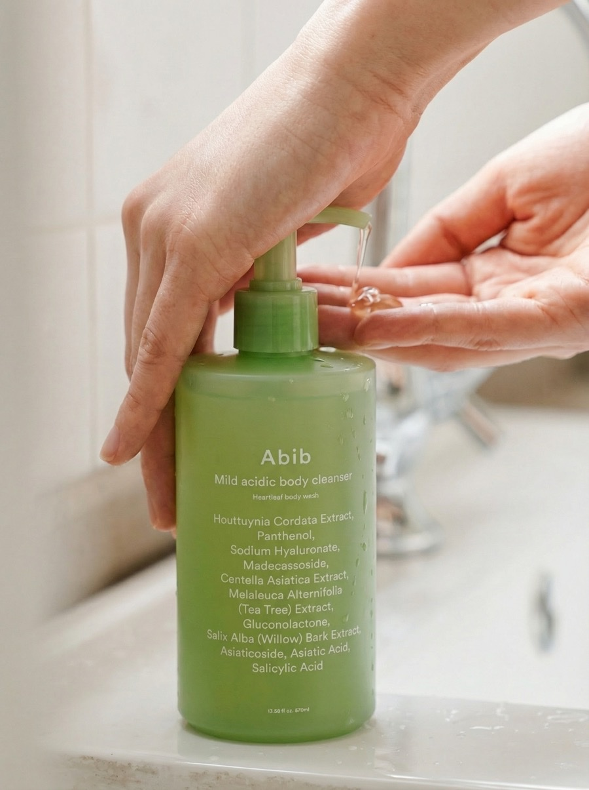
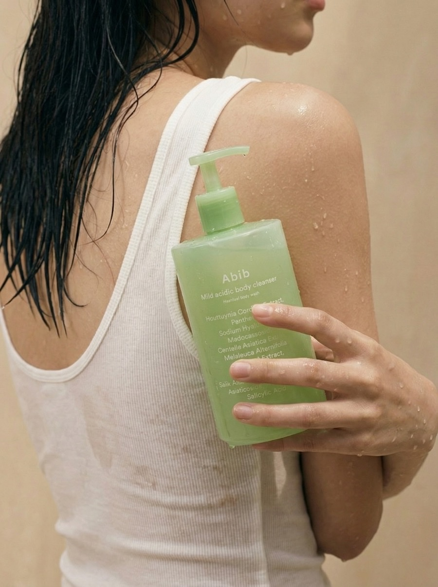
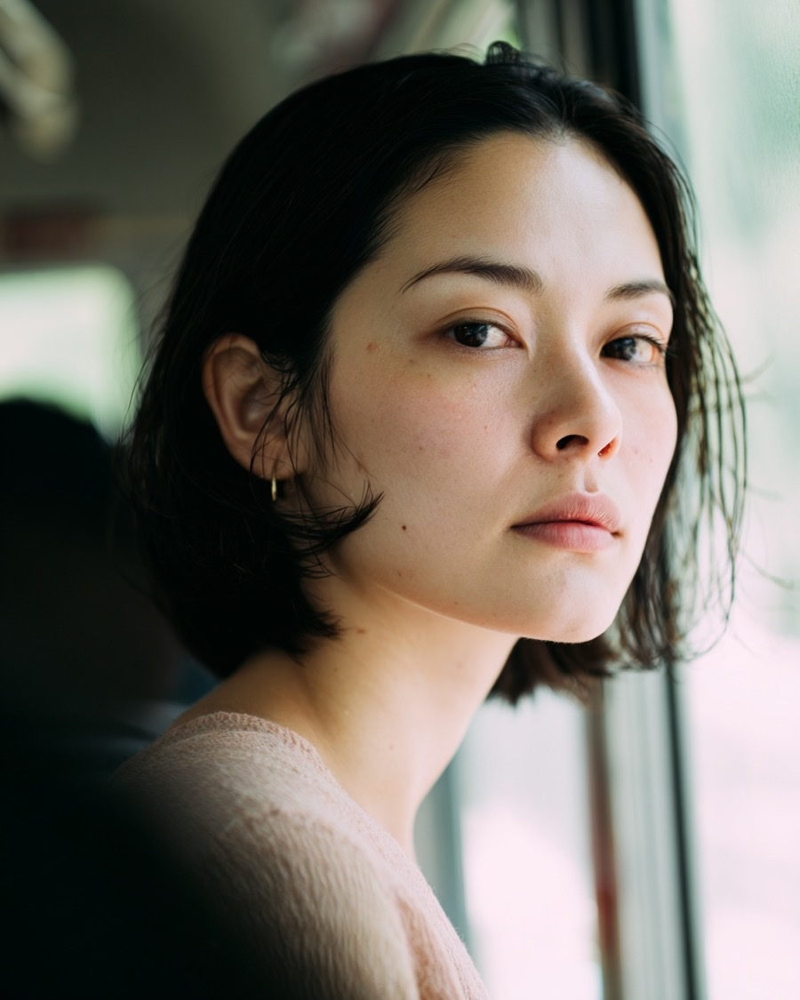

Sejeong LEE
Product Designer, Seoul
여기까지 와주신 당신... 반갑습니다
이 공간은 포트폴리오라고 하기에는 다소 개인적이고
OS라는 컨셉으로 제가 듣고 경험한 것들을
모아둔 블로그에 가까운 것 같네요ㅎㅎ그냥 언제부턴가 이런걸 만들어보고 싶었어요
보고 들을 것이 넘쳐나는 세상이지만
이 곳에서 취향에 맞는 컨텐츠 하나 쯤은 발견하셨기를 바라며...*
Last updated 26-07-09
Sorry...
작업중입니다 쪼금만 기다려주세요!
2016, Somewhere in seoul
2018, Museum San
2019, Seoul Forest
2017, FREITAG Store Tokyo
2017, Inside a taxi in Taiwan
2019, Jeju

AI as a tool, always.
Images made with AI,with the belief
that it should always remain just a tool.



